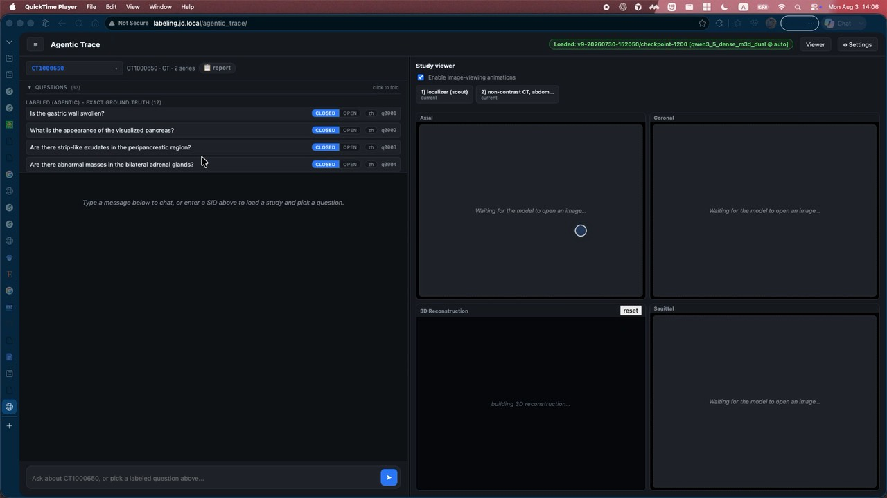
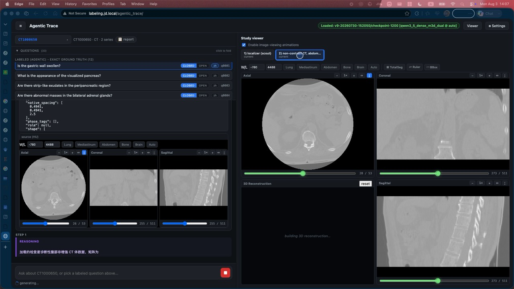
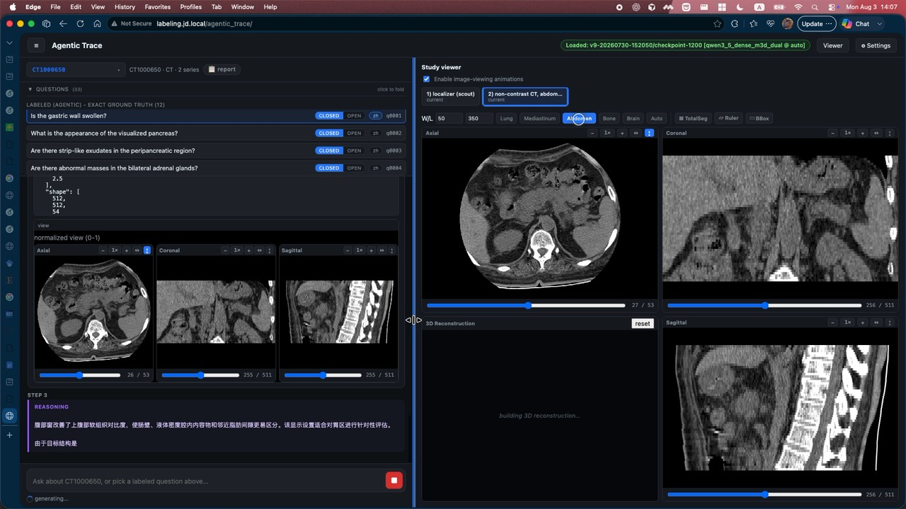
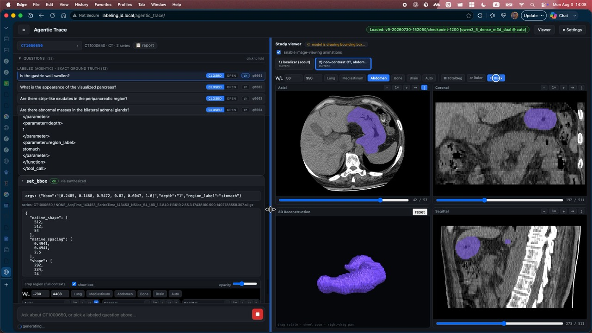
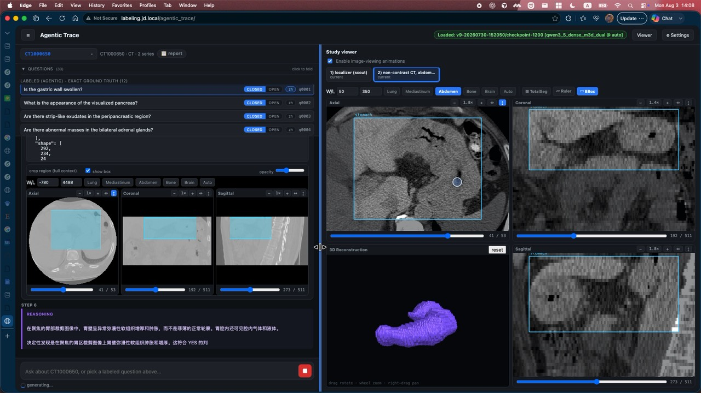

WAIC 2026 · 京东健康
确定性来自执行
用代码和操作流重定义可信医疗 AI
可执行 · 可回放 · 可审计
刘思远 Leo ｜ 京东健康 AI 负责人 · JoyAI-Med
核心判断
下一阶段的竞争，不再是"谁的模型最大"
而是 "谁能把 AI 可靠、可信、可规模化地交付到医生手里"。医疗场景对错误零容忍：一次幻觉、一处不可复核的结论，就足以让整套系统失去临床信任。
我们的答案是把不确定的"生成"，压回到确定的"执行"——让每一个医疗判断都建立在可执行的代码、可回放的操作流、可审计的证据之上。
可执行
指南与推理落成代码与工具调用，而非自然语言独白
可回放
每一步 Observe→Act→Verify 留痕可重跑
整体框架 · 三块基石
从标尺到引擎再到交付
① 开放评测
与上海 AI 实验室联合，循证 / 多模态问诊 / 3D 影像基准，建立行业标尺
② 可验证推理 · JoyAI-MedCode
指南即代码 × 多专家蒸馏；操作流轨迹替代思维链
③ 开放交付 · MedWork
开放的医生 Agent 基础设施，把模型稳定、经济地送到每位医生手里
今天重点讲第二块的"操作流"，并现场回放一段 3D 阅片智能体 的真实执行轨迹。
① 开放评测 · 建立行业标尺
没有可信的标尺，就没有可信的模型
与上海人工智能实验室联合，围绕真实临床任务构建并开放一组基准，覆盖循证、多模态问诊与 3D 影像三条主线。
MedEviBench · 循证
考核结论是否有据可依、引用是否可追溯
MedRealMM · 多模态问诊
贴近真实门诊的图文混合问诊场景
Med3DVQA · 3D 影像
CT/MR 体数据上的问答与定位
配合 MedBench v5.0 作为综合能力盘，评测结果开放、可复现。
评测关键发现 · Med3DVQA
通用多模态模型在 3D 影像上的四类短板
1空间尺度失真 忽略体素 spacing，把"几毫米"和"几厘米"混为一谈
2窗宽窗位不当 不会按解剖部位切换窗位，软组织病灶被"洗白"
3Z 轴定位漂移 跨层面追踪能力弱，定位在层间来回跳
这四类短板，正是"操作流"要逐一堵死的地方——让模型像放射科医生一样动手看片，而不是凭记忆答题。
② 可验证推理 · JoyAI-MedCode
指南即代码 × 多专家蒸馏
把临床指南与推理过程编译成可执行代码与工具调用，让"为什么这么判"变成一段能重跑、能审计的程序，而不是一段说服性的文字。
HealthBench · Total
69.3 SOTA
HealthBench · Hard
50.6 SOTA
模型规格
Dense 27B / MoE 35B；三模态 MRoPE、spacing-aware、Z 轴 token 压缩
可验证推理 · 指南即代码
把 NCCN / CSCO 指南写成可执行的决策程序
以非小细胞肺癌（NSCLC）分期与用药为例：分型、分期、基因分型、一线方案选择等分支，被显式编码为带条件判断的代码路径。
自由文本推理
路径不可见：改一个前提，结论怎么变，说不清
不可回放：同一问题两次答案可能不同
难审计：错在哪一步无法定位
指南即代码
路径显式：每个分支对应指南条目，可追溯
可回放：相同输入必得相同决策路径
可审计：错在哪个判断，一眼定位并修正
可验证推理 · 循证知识层 medwiki
medwiki：主动检索的循证知识，而非被动拼接
传统 RAG
按相似度一次性召回片段，塞进上下文
召回质量看运气，证据链断裂
拼接结果，难以逐条溯源
medwiki（llmwiki + agentic search）
模型主动多轮检索，围绕问题逐步补证
知识以 wiki 结构组织，条目间可跳转互链
每条结论绑定可追溯来源，支持核验
medwiki 与 JoyAI-MedCode 基座并列，构成"知识层 + 推理层"的双引擎。
可验证推理 · 核心范式
用操作流轨迹替代思维链
思维链 CoT
一段自然语言独白，说得通就算对
可以编造：文字能"想象"出没看到的东西
无法验证每一步是否真的发生
操作流轨迹（Observe→Act→Verify）
每一步是真实工具调用：加载序列、调窗位、画框、重建
无法编造：没调用工具就没有那一步的观测
结论绑定具体切面与坐标，可回放可审计
这就是可信的来源：确定性来自执行——模型必须真的"动手看"，痕迹骗不了人。
可验证推理 · 3D Chain-of-Operator
像放射科医生一样，分三阶段阅片
1全局导航 先看定位像 / 全序列，确定要看的部位与层面范围
3自由核验 画框、3D 重建、三视图交叉核验，把结论钉在证据上
平均 3D VQA 准确率 74.03%，且每个答案都能指回它看的那一帧。下面直接回放一段真实执行。

DEMO · 实录回放
Agentic Trace
3D 阅片智能体
病例 CT1000650，非增强腹部 CT。带标注的封闭式问题，答案有 exact ground truth 兜底。
问题："胃壁是否肿胀？（Is the gastric wall swollen?）"
模型 qwen3_5_dense_m3d_dual · ckpt-1200，接下来它会自己加载序列、调窗、画框、重建，一步步给出可核验的结论。

STEP 1 · Observe
先读懂这套体数据
模型加载序列，读出 native_shape 与 native_spacing——先把真实空间尺度搞清楚，再谈"大小"。
这一步直接对应评测里的第一类短板：空间尺度失真。不解析 spacing，"肿胀"就无从判断。

STEP 3 · Act
切到腹窗再看
模型主动把窗宽窗位调到 Abdomen · W/L 350/50，让胃壁软组织的层次显出来。
对应第二类短板：窗宽窗位不当。默认窗下软组织被"洗白"，调窗是放射科医生的基本功，模型也得会。

STEP 5 · Act
定位胃 · 3D 重建
真实工具调用 set_bbox，参数 region_label:"stomach"。系统据此渲染出紫色 3D 胃体。
这不是"文字描述"，是一次可回放的操作：框的坐标、深度、序列号都留痕，任何人可以照着重跑。

STEP 6 · Verify
三视图核验 → 结论 YES
bbox 同步落在 轴位 / 冠状 / 矢状 + 3D 四个视图上。模型给出推理："胃壁呈异常软组织增厚和肿胀……符合 YES"。
结论绑定到具体切面与框，医生可以直接点开那一帧复核。这就是可执行·可回放·可审计的闭环。
③ 开放交付 · MedWork
把模型稳定、经济地送到每位医生手里
MedWork 是开放的医生 Agent 基础设施：统一的工具运行时、可回放的轨迹存储、私有化部署与推理评测，让上面所有能力可以在医院内落地、可运维、可审计。
开放
工具与 Agent 框架开放，医院/药企可自建可扩展
经济
Dense/MoE 双规格 + Z 轴压缩，算力可控可私有化
结语
确定性，来自执行
当医疗 AI 的每一步都可执行、可回放、可审计，信任才不再依赖"模型有多大"，而是建立在能被任何人复核的证据之上。
这是京东健康正在做的事：把开放评测的标尺、可验证推理的引擎、开放交付的基础设施，一起交给行业。
谢谢 · 刘思远 Leo ｜ 京东健康 AI · JoyAI-Med